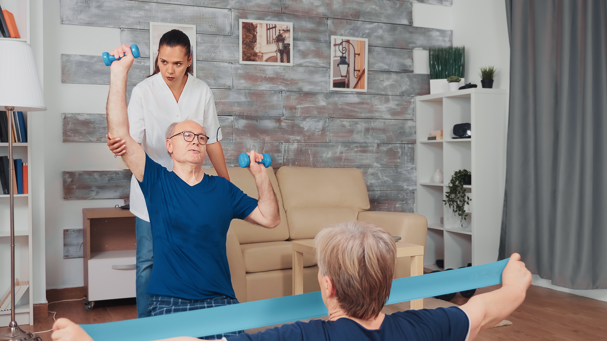

Nossos Serviços
Confira o que oferecemos aos nossos hóspedes.

Enfermagem 24 horas
Nossos hóspedes recebem cuidados de enfermagem dedicados e contínuos 24 horas por dia. Nossa equipe de enfermeiros altamente qualificados está sempre disponível para garantir o bem-estar e a saúde de nossos residentes, proporcionando assistência médica, administração de medicamentos e cuidados personalizados sempre que necessário.Médico
Contamos com um corpo médico experiente que faz visitas regulares à nossa casa de repouso. Isso significa que nossos idosos têm acesso a cuidados médicos de alta qualidade, exames de saúde preventivos, avaliações clínicas e aconselhamento médico individualizado para garantir sua saúde e conforto contínuos.
Nutricionista
A nutrição desempenha um papel fundamental na qualidade de vida dos idosos. Nossos nutricionistas especializados trabalham em conjunto com nossos residentes para criar planos alimentares personalizados que atendam às suas necessidades dietéticas específicas. Eles se certificam de que cada refeição seja equilibrada e saborosa, promovendo a saúde e o prazer de comer.

Fisioterapia
A fisioterapia é essencial para manter a mobilidade e a qualidade de vida dos idosos. Em Recanto dos Nobres, oferecemos sessões de fisioterapia individualizadas e em grupo para ajudar nossos residentes a manterem a força muscular, a flexibilidade e a independência. Nossos fisioterapeutas estão comprometidos em melhorar a funcionalidade e o conforto de nossos idosos.